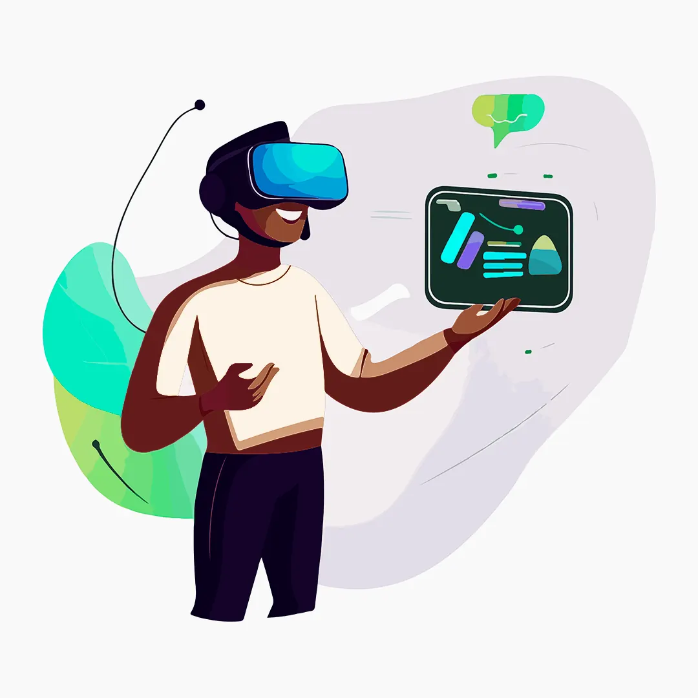

A Realidade Aumentada (RA) tem emergido como uma das tecnologias mais inovadoras e impactantes no setor de varejo. Ao sobrepor elementos digitais ao mundo físico, a RA oferece experiências interativas e personalizadas que estão revolucionando a maneira como os consumidores interagem com as marcas. Neste artigo, exploraremos como empresas renomadas estão utilizando a Realidade Aumentada para transformar suas estratégias de marketing e engajar os clientes de maneiras inéditas.
1. IKEA Place: Mobilizando o Lar com um Toque
A IKEA, gigante do mobiliário, foi uma das pioneiras no uso da RA para aprimorar a experiência do cliente. Com o aplicativo IKEA Place, os usuários podem virtualmente "colocar" móveis em suas casas para ver como eles se encaixam no espaço e combinam com a decoração existente.
Essa inovação não apenas facilita o processo de tomada de decisão, mas também reduz a incerteza e o risco associados à compra de móveis sem vê-los em contexto. A abordagem da IKEA demonstra como a RA pode ser utilizada para eliminar barreiras no funil de vendas, aumentando a confiança do consumidor.
2. Sephora Virtual Artist: A Beleza na Era Digital
A Sephora, líder no segmento de cosméticos, lançou o aplicativo Sephora Virtual Artist, que permite aos clientes experimentar virtualmente diferentes produtos de maquiagem usando a câmera do smartphone.
Essa ferramenta interativa oferece uma experiência personalizada, permitindo que os usuários testem cores e estilos sem a necessidade de aplicar fisicamente os produtos. Isso não só melhora o engajamento, mas também incentiva a experimentação, levando a um aumento nas vendas de produtos que os clientes podem não ter considerado inicialmente.
3. Experiência Inesquecível: A Campanha de RA da Pepsi
Em uma das campanhas de marketing mais memoráveis, a Pepsi Max transformou um ponto de ônibus em Londres em uma experiência de RA alucinante. Ao instalar telas que exibiam conteúdo digital em tempo real, os passageiros foram surpreendidos com cenas de OVNIs, tigres soltos e ataques de robôs.
Essa campanha viral demonstrou o poder da RA em criar experiências envolventes e compartilháveis, aumentando significativamente o reconhecimento da marca e o engajamento nas redes sociais.
4. Amazon AR View: Visualizando Produtos em Casa
A Amazon incorporou a RA em seu aplicativo móvel com o recurso AR View, permitindo que os clientes vejam como os produtos ficariam em suas casas antes de efetuar a compra.
Isso é particularmente útil para itens como decoração, eletrônicos e eletrodomésticos. Ao proporcionar essa visualização prévia, a Amazon ajuda os clientes a tomar decisões de compra mais informadas, melhorando a satisfação e reduzindo devoluções.
5. Gucci Virtual Try-On: Luxo e Inovação
A Gucci, marca de luxo italiana, lançou um recurso de RA em seu aplicativo que permite aos usuários experimentar virtualmente seus tênis exclusivos.
Essa estratégia combina a exclusividade da marca com tecnologia de ponta, atraindo um público mais jovem e tecnicamente informado. A iniciativa não apenas impulsiona as vendas online, mas também fortalece a imagem da Gucci como líder em inovação no setor de luxo.
6. L'Oréal e o Virtual Makeup
A L'Oréal adquiriu a empresa de tecnologia ModiFace para expandir suas capacidades em RA. Com essa aquisição, a L'Oréal oferece experiências de maquiagem virtual em várias de suas marcas, incluindo Maybelline e Lancôme.
Essa estratégia permite que os consumidores experimentem diferentes produtos e looks, personalizando a experiência de compra e aumentando a probabilidade de conversão.
7. Lego e a RA Interativa nas Lojas
A Lego implementou quiosques de RA em suas lojas que permitem aos clientes escanear caixas de produtos e ver modelos 3D animados construídos virtualmente.
Isso enriquece a experiência na loja, permitindo que crianças e adultos vejam o produto final em ação, estimulando o interesse e o desejo de compra.
Impacto da Realidade Aumentada no Varejo
As empresas que adotam a RA em suas estratégias de marketing estão colhendo benefícios significativos:
- Engajamento Aprimorado: A RA proporciona experiências interativas que mantêm os clientes engajados por mais tempo.
- Personalização: Permite que as marcas ofereçam experiências personalizadas, aumentando a relevância para o cliente.
- Tomada de Decisão Facilitada: Ao visualizar produtos no contexto real, os clientes podem tomar decisões de compra com mais confiança.
- Diferenciação Competitiva: A adoção de tecnologias inovadoras posiciona as marcas como líderes em seus setores.
Considerações Finais
A Realidade Aumentada está redefinindo o marketing de varejo ao criar pontes entre o mundo físico e digital. As empresas que incorporam a RA em suas estratégias não apenas melhoram a experiência do cliente, mas também ganham vantagem competitiva em um mercado cada vez mais saturado.
À medida que a tecnologia continua a evoluir, podemos esperar ver aplicações ainda mais criativas e impactantes da RA no varejo. Para as marcas, este é o momento de explorar como a Realidade Aumentada pode transformar suas interações com os clientes e impulsionar o crescimento nos próximos anos.
Quer resultados como esses no seu negócio?
Receba um diagnóstico estratégico gratuito e descubra como tratar o seu marketing como investimento.
Falar com a BAM →